Both runs used the same adjusted source strips, horizontal placement, and color-only seam cost. The experiment fits a small quadratic correction after the existing vertical scale fit, bounded to 8 px per strip. Only strips with enough landmark coverage participate. Beyond the supported height range, the correction stays constant.
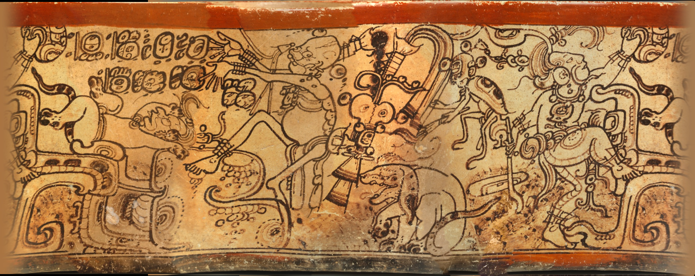
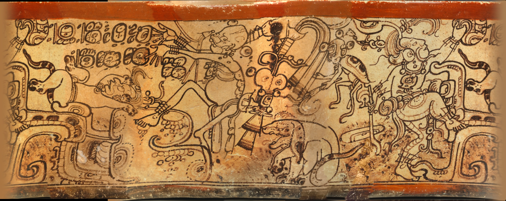
Scale fit on the left. Nonlinear warp on the right. The upper row shows the rim and the lower row shows the base. Each pair uses the same pixel scale.
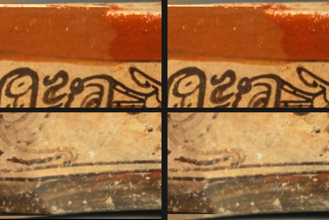
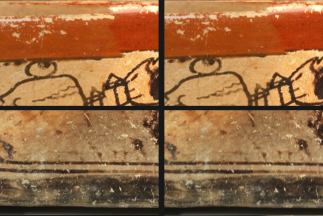
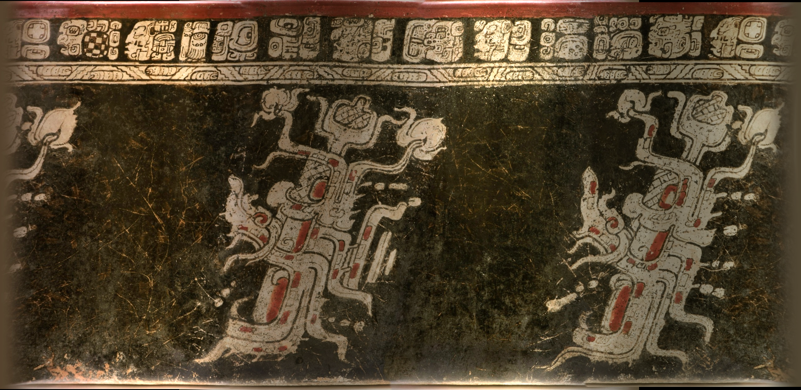
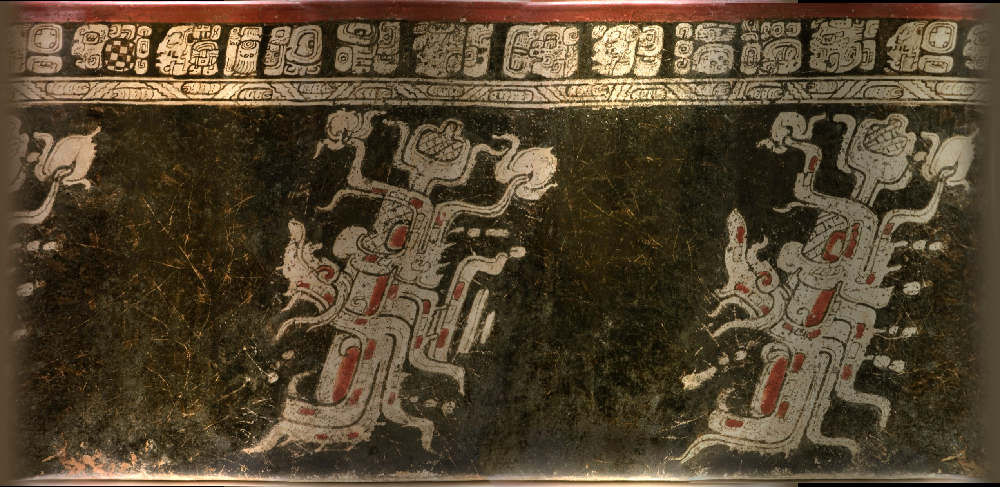
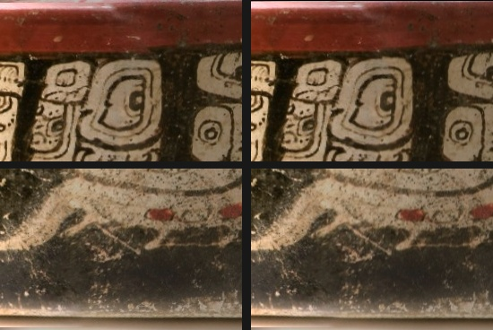
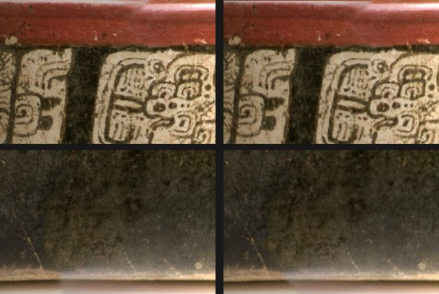
This approach matches signed gradients near the base and adjusts only the lower part of the strip. Its own held-out base anchors improved from 8.00 to 3.56 px on the Met (60 anchors, 18 pairs). These are different landmarks from the quadratic fit's holdout. LACMA yielded two reliable anchors and retained the scale fit.
Full Met base-edge output · Base-edge close-up at the red band · Full LACMA fallback · Base-edge metrics
Each crop uses the same horizontal window and is aligned to the bottom of its canvas.
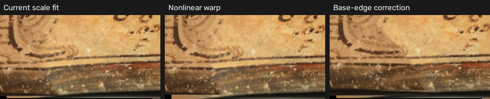
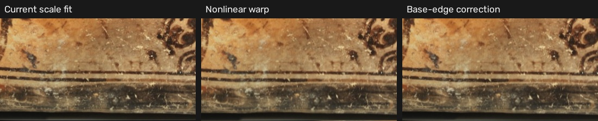
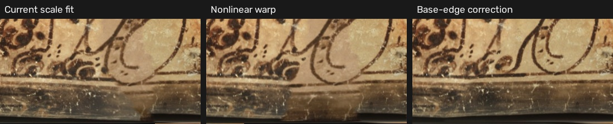
Absolute vertical distance between matched painted landmarks in pixels. Five spatial groups were held out in turn. Rim and base are the first and last quarters of the strip. These residuals measure overlap alignment; the close-ups show what happened at the blended cut.
| Case | Region | Points | Median px | 90th percentile px |
|---|---|---|---|---|
| Met | Rim | 2,005 | 1.39 → 1.25 | 5.30 → 3.85 |
| Met | Base | 342 | 4.36 → 4.19 | 9.53 → 9.03 |
| LACMA | Rim | 430 | 1.18 → 1.22 | 3.40 → 2.93 |
| LACMA | Base | 0 | — | — |